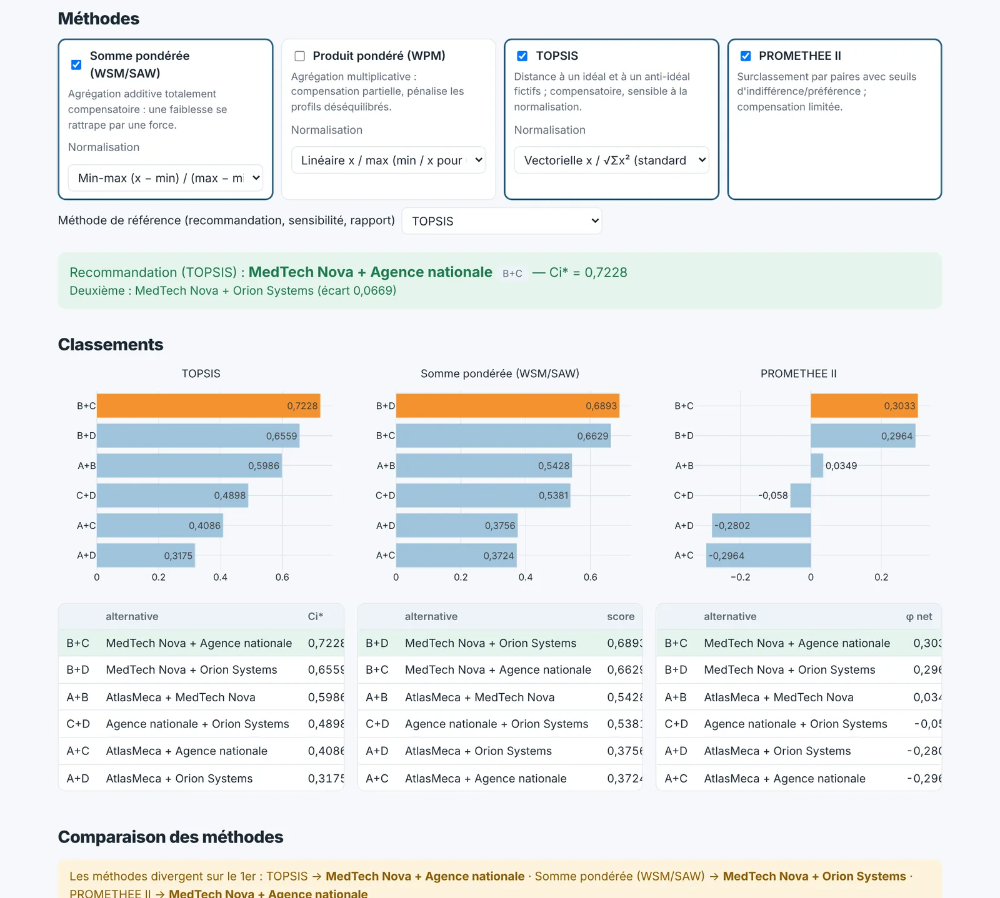
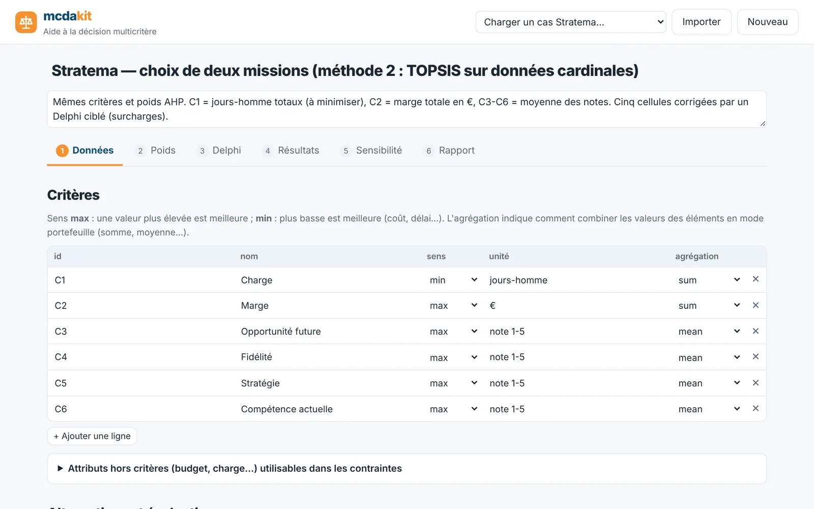
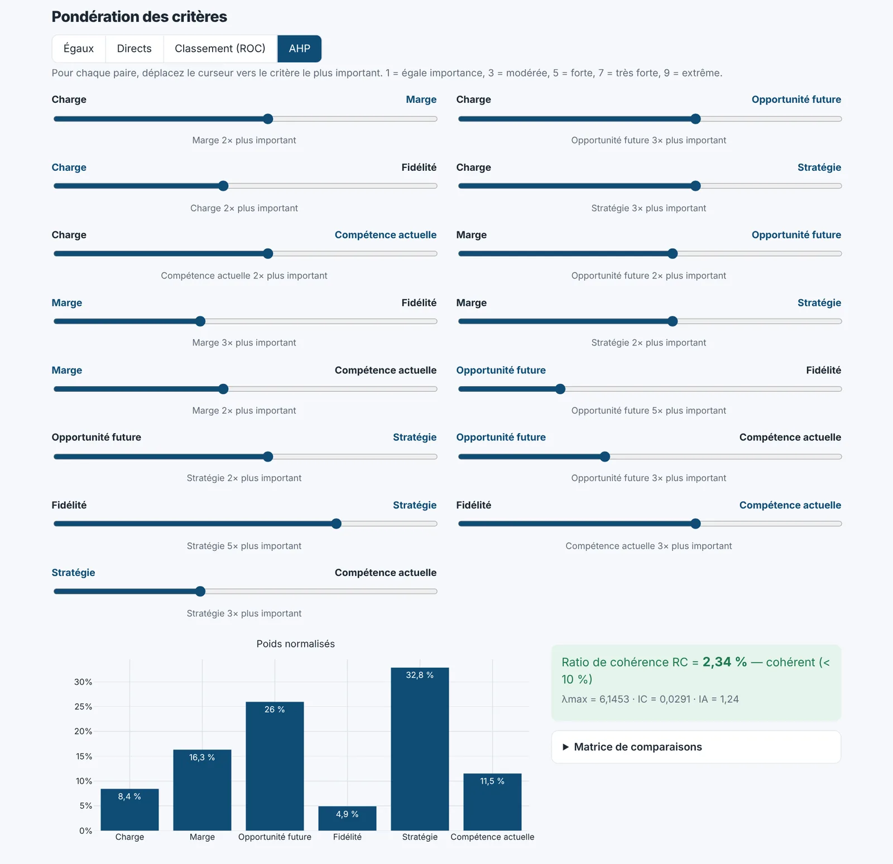
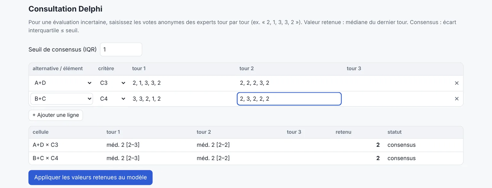
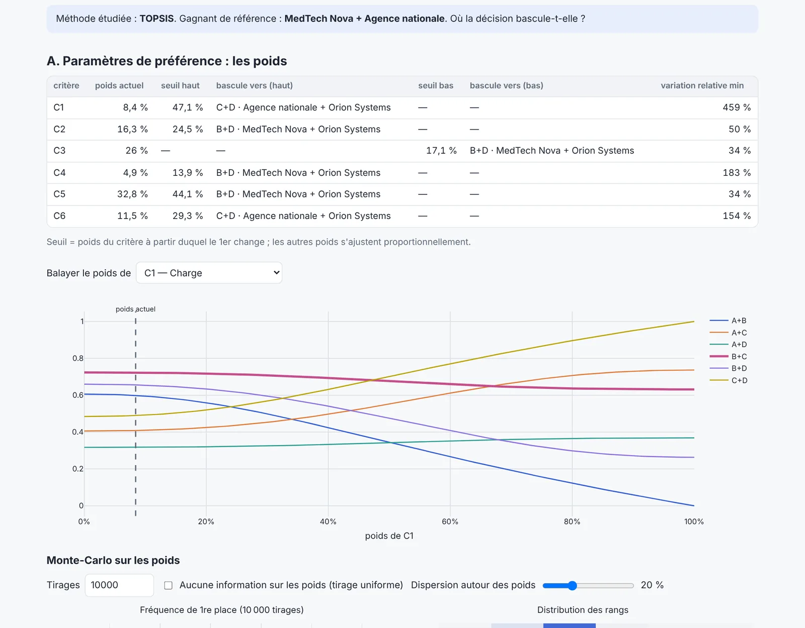
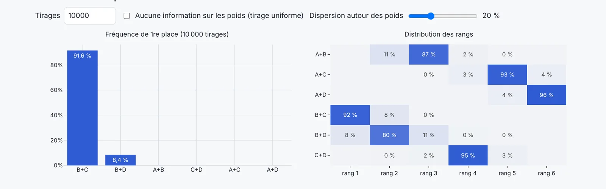
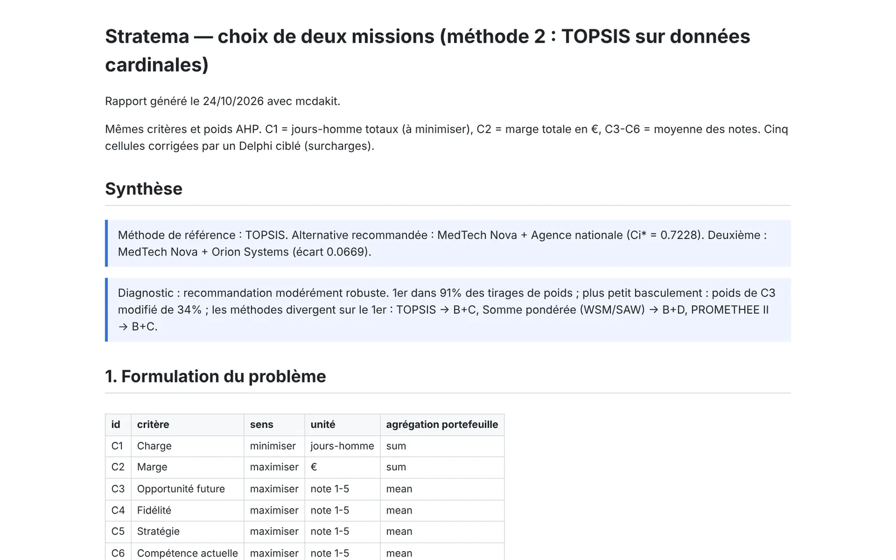

Des poids implicites
Additionner des notes revient à dire que tous les critères se valent. Est-ce vraiment le cas ? mcdakit vous fait expliciter et mesurer l'importance de chaque critère.
Aide à la décision multicritère
Fournisseur, projet, recrutement, implantation, portefeuille de missions… mcdakit transforme une décision intuitive en une démarche structurée : critères explicites, poids justifiés, plusieurs méthodes de classement et un test de robustesse. Vous savez ce que vous choisissez, et pourquoi.

Pourquoi un outil ?
Additionner des notes revient à dire que tous les critères se valent. Est-ce vraiment le cas ? mcdakit vous fait expliciter et mesurer l'importance de chaque critère.
Selon la méthode, une forte faiblesse peut être compensée… ou non. Comparer plusieurs méthodes révèle si votre classement tient à vos données ou à une façon de calculer.
Le gagnant le reste-t-il si un poids bouge de quelques points ? L'analyse de sensibilité trouve les seuils de basculement et qualifie votre recommandation.
Fonctionnement
L'application suit la démarche d'aide à la décision, de la formulation du problème jusqu'au rapport. Chaque modification est recalculée instantanément.
Listez vos critères (avec leur sens : un coût se minimise, une qualité se maximise) et vos alternatives avec leurs valeurs, dans des tableaux éditables comme un tableur.

Quatre façons au choix : poids égaux, poids saisis directement, simple classement des critères ou méthode AHP, où vous comparez les critères deux à deux avec un curseur.
Astuce : vous hésitez sur les chiffres mais savez classer les critères ? Choisissez « Classement (ROC) ».

Une évaluation est incertaine ? Recueillez les votes anonymes de plusieurs experts, tour par tour, selon la méthode Delphi. L'outil calcule médiane, quartiles et consensus.

Cochez une ou plusieurs méthodes : somme pondérée, produit pondéré, TOPSIS, PROMETHEE II. La recommandation s'affiche avec l'écart au deuxième.
La question décisive : « dans quelle mesure peut-on faire confiance à ce choix ? »
Verdict final : robuste modérément robuste fragile, avec ses raisons.


Un rapport complet, prêt à joindre à une note de décision : formulation, poids et cohérence, matrice, calculs de chaque méthode, comparaison, sensibilité, diagnostic et recommandation.

Méthodes
Pondération
Comparaisons par paires sur l'échelle de Saaty (1 à 9) ; poids issus du vecteur propre et contrôle de cohérence.
Évaluation
Consultation anonyme d'experts en plusieurs tours jusqu'au consensus (écart interquartile faible).
Compensatoire
La plus intuitive : chaque critère contribue à proportion de son poids. Une faiblesse se rattrape par une force.
Compensation partielle
Multiplie au lieu d'additionner : pénalise les options très déséquilibrées.
Distance à l'idéal
Classe selon la proximité à une option idéale fictive et l'éloignement de la pire.
Surclassement
Compare les options deux à deux avec des seuils d'indifférence et de préférence : un petit écart ne compte pas.
Toutes les méthodes sont implémentées dans une bibliothèque Python open source et testées sur un cas réel dont elles reproduisent les résultats publiés au dix-millième près.
Validation
Une recommandation n'a de valeur que si ses calculs sont exacts. Le moteur est confronté en permanence à des résultats publiés et à des implémentations indépendantes.
| Source publiée | Méthode | Résultat publié | Recalculé | Verdict |
|---|---|---|---|---|
| Recalcul en direct des cas publiés… | ||||
Ce tableau est recalculé par le serveur à l'ouverture de la page. Essayez vous-même : chargez le parc éolien de Ziemba et al. (2017), la sélection d'équipement d'Ersoy (2021), l'exemple PROMETHEE de Papathanasiou & Ploskas ou l'admission d'élèves de Rizan et al. (2020), et comparez aux valeurs de l'article.
Pour quoi faire ?
Guide de démarrage
Questions fréquentes
Le projet est enregistré uniquement dans votre navigateur. Pour chaque calcul, il est envoyé au serveur, traité, puis oublié : rien n'est conservé côté serveur. Pensez à exporter le projet (JSON) si vous changez d'ordinateur ou videz le cache.
Commencez par la somme pondérée (la plus lisible) et TOPSIS. Ajoutez PROMETHEE si un petit écart sur un critère ne doit pas compter, ou si une très forte faiblesse ne doit pas être compensée. L'important est de comparer : si toutes les méthodes s'accordent, votre choix est solide.
Il mesure si vos comparaisons se contredisent (A plus important que B, B que C, mais C que A). En dessous de 10 %, elles sont jugées cohérentes ; au-delà, l'outil indique quelles comparaisons revoir.
Quand vous devez retenir plusieurs éléments à la fois. Plutôt que de classer les éléments un par un puis de prendre les premiers, l'outil évalue chaque combinaison comme une alternative, en respectant vos contraintes (budget total, capacité…).
Non : le modèle éclaire la décision, il ne la prend pas. Il rend vos hypothèses explicites et montre dans quelles conditions le choix change. Une recommandation « fragile » invite à débattre des poids ou des données incertaines.
Oui. La bibliothèque Python est réutilisable telle quelle, et une API HTTP documentée est disponible sur /api/docs.
Aucune inscription. Commencez de zéro ou à partir d'un exemple.